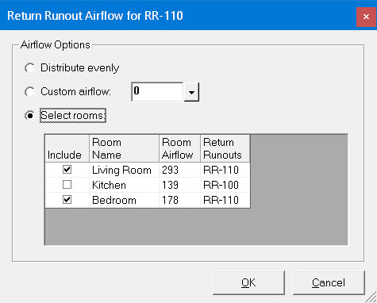

Return Runout Airflow |
  
|
Return Runout Airflow |
|
The Return Runout Airflow dialog is for setting the airflow option for a return runout in Manual D Ductsize as well as Tabular Manual D Ductsize.

When options are disabled: If there are no rooms in the current system on the drawing, then the only option available is "Custom airflow." The "Distribute evenly" and "Select rooms" options are disabled because there is no system airflow from the load calculation.
Distribute evenly: Sets the airflow for the current runout to be equal to to total system airflow divided by the number of return runouts in the system.
Custom airflow: Specifies a custom amount of return airflow for the current runout.
Select rooms: Specifies one or more rooms to use in determining the airflow for the current runout. Check the include boxes for those rooms from which you want to return air. The return airflow for a room is equal to its supply airflow using the average load procedure multiplied by the ratio of the calculated system return airflow to the calculated system supply airflow. If you specify the same room for more than one return runout, that room's return airflow will be split evenly among those runouts.